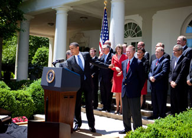

President Barack Obama announced a new national policy on Tuesday that will increase the fuel economy and reduce the greenhouse gas (GHG) emissions of all new cars and trucks sold in the United States.
The policy includes proposed new fuel economy standards will cover model years 2012 through 2016, achieving an average fuel economy of 35.5 miles per gallon (mpg) for model year 2016. This exceeds the requirements of the Energy Independence and Security Act of 2007, which required an average fuel economy of 35 mpg by model year 2020. The standards will also reduce carbon dioxide emissions from new vehicles by 30 percent by 2016. Over the lifetime of these new vehicles, they will save an estimated 1.8 billion barrels of oil and will avoid the emission of 900 million metric tons of carbon dioxide. Cars and light trucks cause 17 percent of the carbon dioxide emissions in the United States.
The groundbreaking policy represents an unprecedented collaboration among the U.S. Department of Transportation (DOT), the U.S. Environmental Protection Agency (EPA), 10 of the world’s largest auto manufacturers, the United Auto Workers (UAW), leaders in the environmental community, the State of California, and other state governments.
Because the policy combines fuel economy regulations with GHG regulations for vehicles, it addresses the EPA’s need to set GHG regulations for vehicles while also addressing California’s request to set its own GHG regulations. Thirteen other states and the District of Columbia had planned to adopt California’s GHG regulations. Meanwhile, 10 major car companies and the UAW have embraced the national program because it provides certainty and predictability to 2016 and includes flexibilities that will significantly reduce the cost of compliance.
To put the new policy in place, the EPA and DOT intend to initiate a joint rulemaking for new vehicle standards. The proposed standards are expected to be divided into categories of vehicles, based on the size of the vehicles, and they are expected to include a variety of measures to allow flexibility in meeting the standards, including credits earned for actions such as implementing advanced air conditioning technologies and using additional technologies that reduce carbon dioxide emissions. Such credits would be tradable among the auto manufacturers.
|
 SAMANTHA APPLETON, WHITE HOUSE President Obama acknowledged Alan Mulally, CEO of Ford Motor Company, while announcing the new auto policy. Nine other auto executives, the president of the United Auto Workers, and three administration officials joined the president for the announcement. |
|
|